xopto.materials.ri.util.fit module¶
- class Fit(kind: xopto.materials.ri.util.model.base.Model, wavelengths: numpy.ndarray, n: numpy.ndarray, x0: Optional[Tuple] = None, verbose: bool = False)[source]¶
Bases:
objectFit one of the models to the measured values of the refractive index as a function of wavelength.
- Parameters
kind (model.Model) –
Model of the refractive index as a function of wavelength. Use one of the predefined models:
”Conrady_1’: Conrady 1 model

”Conrady_2’: Conrady 2 model

”ConradyEx_1’: Extended Conrady 1 model

”ConradyEx_2’: Extended Conrady 2 model

”Exponential”: Exponential model 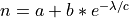
”Cauchy’: Cauchy’s model 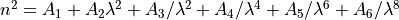
”Sellmeier_1”: 1 term Sellmeier formula

”SellmeierEx_1”: 1 term extended Sellmeier formula 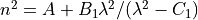
”Sellmeier_2”: 2 term Sellmeier formula 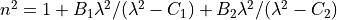
”SellmeierEx_2”: 2 term extended Sellmeier formula 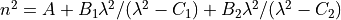
”Sellmeier_3”: 3 term Sellmeier formula 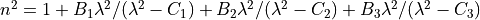
”SellmeierEx_3”: 3 term extended Sellmeier formula

”Sellmeier_4”: 4 term Sellmeier formula 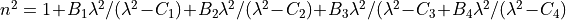
”SellmeierEx_4”: 4 term extended Sellmeier formula 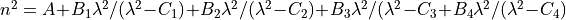
”Sellmeier_5”: 5 term Sellmeier formula 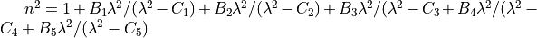
”SellmeierEx_5”: 5 term extended Sellmeier formula 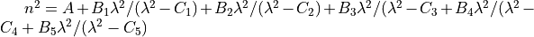
”Herzberger_3_2”: Herzberger 4 x 2 formula 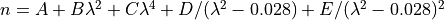
”HerzbergerEx_3_2”: Extended Herzberger 4 x 2 formula 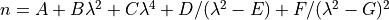
”Herzberger_4_2”: Herzberger 4 x 2 formula 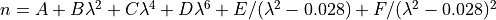
”HerzbergerEx_4_2”: Extended Herzberger 4 x 2 formula 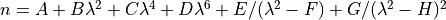
wavelengths (np.ndarray vector) – Wavelengths at which the refractive index was measured. The wavelengths must be ordered in ascending order.
n (np.ndarray vector) – The measured values of refractive index at the specified wavelengths.
x0 (list, tuple or np.ndarray vector) – Initial guess of the model parameters.
verbose (bool) – Verbose mode.
Note
For better convergence of the fit process use an appropriate preprocessor with the supplied refractive index model. A preprocessor that scales the wavelengths by the inverse of the first (shortest) wavelength usually produces good results, e.g.
Sellmeier_1(pp=Scale(1.0/wavelengths[0]))- error() → Tuple[numpy.ndarray, numpy.ndarray][source]¶
Fit error at the wavelengths passed to the constructor.
- Returns
err (np.ndarray of length wavelengths.size) – Fit errors defined as 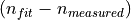.
rel_err (np.ndarray of length wavelengths.size) – Relative fit error defined as
 .
.
- property model: xopto.materials.ri.util.model.base.Model¶
Model instance obtained by the fit to the measured data.
- property n: numpy.ndarray¶
The measured values of refractive index at the specified wavelengths. The values are returned as passed to the constructor.
- visualize(wavelengths: Optional[numpy.ndarray] = None, show=False)[source]¶
Plots the quality of fit.
- Parameters
wavelengths (np.ndarray vector) – Wavelengths (m) at which to visualize the fit. If None, the wavelengths passed to the constructor are used.
show (bool) – If nonzero, calls pp.show().
- property wavelengths: numpy.ndarray¶
Wavelengths at which the refractive index was measured Returns values as passed to the constructor.
- class ThermalFit(kind: xopto.materials.ri.util.model.base.Model, wavelengths: numpy.ndarray, n: numpy.ndarray, temperatures: numpy.ndarray, pk_order: int = 2, x0: Optional[Tuple] = None)[source]¶
Bases:
objectFit a temperature dependent refractive index model. Each parameter of the selected refractive index model is modelled as a polynomial function of the temperature.
- Parameters
kind (model.Model) – Refractive index model instance.
wavelengths (np.ndarray vector) – Wavelengths of light (m). The first wavelength in the vector is used by the model preprocessor to normalize/divide all the wavelengths.
n (numpy_ndarray of shape (wavelengths.size, temperatures.size)) – The measured refractive indices.
temperatures (np.ndarray vector) – Temperatures (should be in K, but accepts any units).
pk_order (int) – Order of the polynomial that models the temperature dependence of the refractive index model parameters.
x0 (list, tuple ndarray vector) – Initial guess of the refractive index model parameters.
- error() → Tuple[numpy.ndarray, numpy.ndarray][source]¶
Fit error at the wavelengths and temperatures passed to the constructor.
- Returns
err (np.ndarray of shape (wavelengths.size, temperatures.size)) – Fit errors defined as .
rel_err (np.ndarray of shape (wavelengths.size, temperatures.size)) – Relative fit error defined as
.
- property n: numpy.ndarray¶
The measured values of refractive index as passed to the constructor.
- polynomial_coefficients() → numpy.ndarray[source]¶
Returns the polynomial coefficients that model the temperature dependence of the refractive index model parameters. Use np.polyval to determine the values of polynomial coefficients at a given temperature (use the same temperture units as for the temperatures that were passed to the constructor).
- Returns
pk – The polynomial coefficients of each model parameter are stored in columns.
- Return type
np.ndarray of shape (pk_order + 1, num_terms*2)
- property temperatures: numpy.ndarray¶
The temperatures at which the refractive index was measured. Returns the values as passed to the constructor.
- visualize(wavelengths: Optional[numpy.ndarray] = None, show: bool = False)[source]¶
Plots the quality of fit.
- Parameters
wavelengths (np.ndarray vector) – Wavelengths (m) at which to visualize the fit. If None, the wavelengths passed to the constructor are used.
show (bool) – If nonzero, calls pp.show().